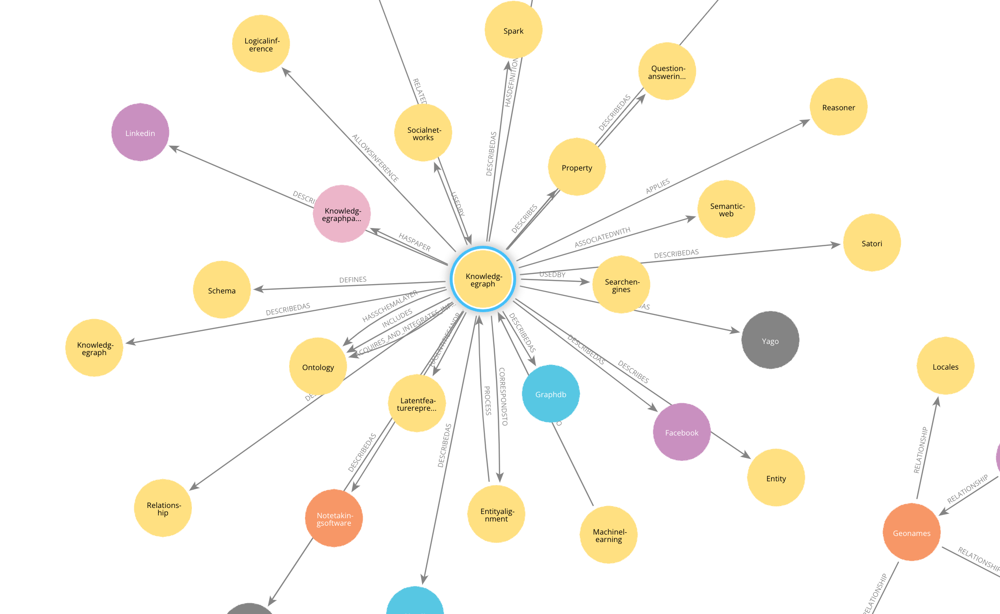
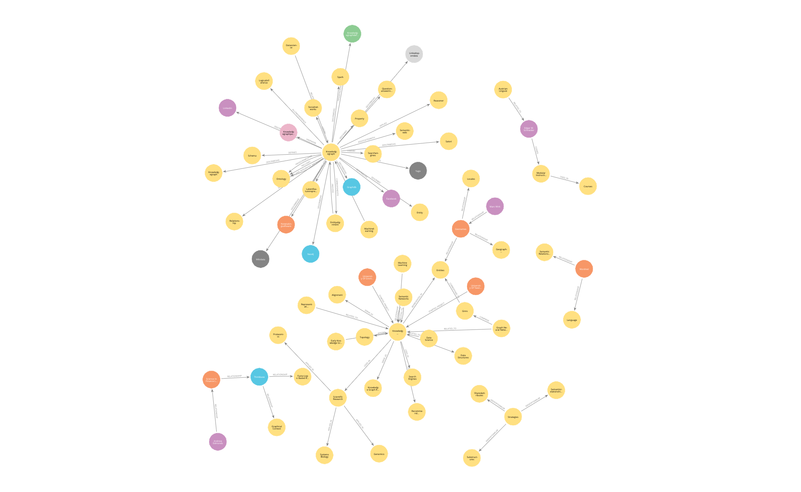

# OS-level
import os
from dotenv import load_dotenv
from datetime import datetime
# Langchain
from langchain.graphs import Neo4jGraph
from langchain_community.graphs.graph_document import (
Node as BaseNode,
Relationship as BaseRelationship,
GraphDocument,
)
from langchain.schema import Document
from typing import List, Dict, Any, Optional
from langchain.pydantic_v1 import Field, BaseModel
from langchain.chains.openai_functions import (
create_openai_fn_chain,
create_structured_output_chain,
)
from langchain_openai import ChatOpenAI
from langchain.prompts import ChatPromptTemplate
from langchain.text_splitter import TokenTextSplitter
from langchain_community.document_loaders import PyPDFLoader
Auto Creating Knowledge Graphs from PDF files using LLMs
Using systems like RAG and Knowledge graphs to serve as a source of truth for LLMs is extremely powerful. However, the creation of knowledge graphs themselves remained a tedious task. Here we explore automatically creating a knowledge graph from a wikipedia page about Knowledge Graphs.
This approach will make it easy for anyone to not only convert relevant documents and even notes into a knowledge graph but also chat with it. Such a system can be extremely powerful for experts who rely on specialised knowledge but fallible human memory.
Refs: - Neo4j’s Knowledge Graph Builder App - Constructing knowledge graphs from text using OpenAI functions - Knowledge Graphs & LLMs: Multi-Hop Question Answering
Imports
Knowledge Graph Database setup
The details have been redacted. Neo4j offers a free hosting of an knowledge graph instance and local options are also available.
url = "neo4j+s://dc7691d1.databases.neo4j.io"
username ="neo4j"
password = "oVDnDE_7i0oxqWHZU6xaMRkqFbXfNx6JPwqH1O0cFc8"
graph = Neo4jGraph(
url=url,
username=username,
password=password
)OpenAI setup
Importing the chat-GPT API key using the .env file is effective and makes for easy project management.
load_dotenv()
api_key = os.environ['OPENAI_API_KEY']Creating classes for Nodes, Properties and Knowledge Graph to be used later
class Property(BaseModel):
"""A single property consisting of key and value"""
key: str = Field(..., description="key")
value: str = Field(..., description="value")
class Node(BaseNode):
properties: Optional[List[Property]] = Field(
None, description="List of node properties")
class Relationship(BaseRelationship):
properties: Optional[List[Property]] = Field(
None, description="List of relationship properties"
)
class KnowledgeGraph(BaseModel):
"""Generate a knowledge graph with entities and relationships."""
nodes: List[Node] = Field(
..., description="List of nodes in the knowledge graph")
rels: List[Relationship] = Field(
..., description="List of relationships in the knowledge graph"
)Functions to create nodes, properties, and relationships
def format_property_key(s: str) -> str:
words = s.split()
if not words:
return s
first_word = words[0].lower()
capitalized_words = [word.capitalize() for word in words[1:]]
return "".join([first_word] + capitalized_words)
def props_to_dict(props) -> dict:
"""Convert properties to a dictionary."""
properties = {}
if not props:
return properties
for p in props:
properties[format_property_key(p.key)] = p.value
return properties
def map_to_base_node(node: Node) -> BaseNode:
"""Map the KnowledgeGraph Node to the base Node."""
properties = props_to_dict(node.properties) if node.properties else {}
# Add name property for better Cypher statement generation
properties["name"] = node.id.title()
return BaseNode(
id=node.id.title(), type=node.type.capitalize(), properties=properties
)
def map_to_base_relationship(rel: Relationship) -> BaseRelationship:
"""Map the KnowledgeGraph Relationship to the base Relationship."""
source = map_to_base_node(rel.source)
target = map_to_base_node(rel.target)
properties = props_to_dict(rel.properties) if rel.properties else {}
return BaseRelationship(
source=source, target=target, type=rel.type, properties=properties
)Prompting an LLM to create the appripriate graph structure.
llm = ChatOpenAI(model="gpt-3.5-turbo-16k", temperature=0)
def get_extraction_chain(
allowed_nodes: Optional[List[str]] = None,
allowed_rels: Optional[List[str]] = None
):
prompt = ChatPromptTemplate.from_messages(
[(
"system",
f"""# Knowledge Graph Instructions for GPT-4
## 1. Overview
You are a top-tier algorithm designed for extracting information in structured formats to build a knowledge graph.
- **Nodes** represent entities and concepts. They're akin to Wikipedia nodes.
- The aim is to achieve simplicity and clarity in the knowledge graph, making it accessible for a vast audience.
## 2. Labeling Nodes
- **Consistency**: Ensure you use basic or elementary types for node labels.
- For example, when you identify an entity representing a person, always label it as **"person"**. Avoid using more specific terms like "mathematician" or "scientist".
- **Node IDs**: Never utilize integers as node IDs. Node IDs should be names or human-readable identifiers found in the text.
{'- **Allowed Node Labels:**' + ", ".join(allowed_nodes) if allowed_nodes else ""}
{'- **Allowed Relationship Types**:' + ", ".join(allowed_rels) if allowed_rels else ""}
## 3. Handling Numerical Data and Dates
- Numerical data, like age or other related information, should be incorporated as attributes or properties of the respective nodes.
- **No Separate Nodes for Dates/Numbers**: Do not create separate nodes for dates or numerical values. Always attach them as attributes or properties of nodes.
- **Property Format**: Properties must be in a key-value format.
- **Quotation Marks**: Never use escaped single or double quotes within property values.
- **Naming Convention**: Use camelCase for property keys, e.g., `birthDate`.
## 4. Coreference Resolution
- **Maintain Entity Consistency**: When extracting entities, it's vital to ensure consistency.
If an entity, such as "John Doe", is mentioned multiple times in the text but is referred to by different names or pronouns (e.g., "Joe", "he"),
always use the most complete identifier for that entity throughout the knowledge graph. In this example, use "John Doe" as the entity ID.
Remember, the knowledge graph should be coherent and easily understandable, so maintaining consistency in entity references is crucial.
## 5. Strict Compliance
Adhere to the rules strictly. Non-compliance will result in termination.
"""),
("human", "Use the given format to extract information from the following input: {input}"),
("human", "Tip: Make sure to answer in the correct format"),
])
return create_structured_output_chain(KnowledgeGraph, llm, prompt, verbose=False)def extract_and_store_graph(
document: Document,
nodes:Optional[List[str]] = None,
rels:Optional[List[str]]=None) -> None:
# Extract graph data using OpenAI functions
extract_chain = get_extraction_chain(nodes, rels)
data = extract_chain.invoke(document.page_content)['function']
# Construct a graph document
graph_document = GraphDocument(
nodes = [map_to_base_node(node) for node in data.nodes],
relationships = [map_to_base_relationship(rel) for rel in data.rels],
source = document
)
# Store information into a graph
print(graph_document)
graph.add_graph_documents([graph_document])
return graph_document
loader = PyPDFLoader("Knowledge_graph.pdf")
start_time = datetime.now()
pages = loader.load_and_split()
# Define chunking strategy
text_splitter = TokenTextSplitter(chunk_size=200, chunk_overlap=20)
# Only take the first 4 pages of the document
documents = text_splitter.split_documents(pages[:4])from tqdm import tqdm
distinct_nodes = set()
relations = []
for i, d in tqdm(enumerate(documents), total=len(documents)):
graph_document=extract_and_store_graph(d)
#Get distinct nodes
for node in graph_document.nodes :
distinct_nodes.add(node.id)
#Get all relations
for relation in graph_document.relationships :
relations.append(relation.type) 0%| | 0/17 [00:00<?, ?it/s]nodes=[Node(id='Knowledgegraph', type='Concept', properties={'description': 'A knowledge graph is a knowledge base that uses a graph-structured data model or topology to represent and operate on data. It stores interlinked descriptions of entities, objects, events, situations, or abstract concepts, while also encoding the relationships underlying these entities.', 'name': 'Knowledgegraph'}), Node(id='Semanticweb', type='Concept', properties={'description': 'The Semantic Web is a development of the World Wide Web in which web content can be expressed not only in natural language but also in a machine-readable format. Knowledge graphs have often been associated with linked open data projects in the Semantic Web.', 'name': 'Semanticweb'}), Node(id='Searchengines', type='Concept', properties={'description': 'Search engines like Google, Bing, Yext, and Yahoo have historically used knowledge graphs to enhance their search results by understanding the connections between concepts and entities.', 'name': 'Searchengines'}), Node(id='Questionansweringservices', type='Concept', properties={'description': "Question-answering services like WolframAlpha, Apple's Siri, and Amazon Alexa utilize knowledge graphs to provide accurate and relevant answers to user queries.", 'name': 'Questionansweringservices'}), Node(id='Socialnetworks', type='Concept', properties={'description': 'Social networks such as LinkedIn and Facebook also make use of knowledge graphs to establish connections between users and provide personalized recommendations.', 'name': 'Socialnetworks'}), Node(id='Datascience', type='Concept', properties={'description': 'Recent developments in data science have led to advancements in knowledge graph construction and utilization, enabling better insights and decision-making.', 'name': 'Datascience'}), Node(id='Machinelearning', type='Concept', properties={'description': 'Machine learning techniques have been applied to knowledge graphs to improve their accuracy, scalability, and predictive capabilities.', 'name': 'Machinelearning'})] relationships=[Relationship(source=Node(id='Knowledgegraph', type='Concept', properties={'name': 'Knowledgegraph'}), target=Node(id='Semanticweb', type='Concept', properties={'name': 'Semanticweb'}), type='associatedWith'), Relationship(source=Node(id='Knowledgegraph', type='Concept', properties={'name': 'Knowledgegraph'}), target=Node(id='Searchengines', type='Concept', properties={'name': 'Searchengines'}), type='usedBy'), Relationship(source=Node(id='Knowledgegraph', type='Concept', properties={'name': 'Knowledgegraph'}), target=Node(id='Questionansweringservices', type='Concept', properties={'name': 'Questionansweringservices'}), type='usedBy'), Relationship(source=Node(id='Knowledgegraph', type='Concept', properties={'name': 'Knowledgegraph'}), target=Node(id='Socialnetworks', type='Concept', properties={'name': 'Socialnetworks'}), type='usedBy'), Relationship(source=Node(id='Datascience', type='Concept', properties={'name': 'Datascience'}), target=Node(id='Knowledgegraph', type='Concept', properties={'name': 'Knowledgegraph'}), type='relatedTo'), Relationship(source=Node(id='Machinelearning', type='Concept', properties={'name': 'Machinelearning'}), target=Node(id='Knowledgegraph', type='Concept', properties={'name': 'Knowledgegraph'}), type='appliedTo')] source=Document(page_content="Example conceptual diagram\nKnowledge graph\nIn know ledge representation and reasoning, a knowledge graph is\na know ledge base that uses a graph-structured data model or\ntopology to represent and operate on data. Knowledge graphs are\noften used to store interlinked descriptions of entities – objects,\nevents, situations or abstract concepts – while also encoding the\nfree-form semantics or relationships unde rlying these entities.[1][2]\nSince the development of the Semantic Web, know ledge graphs\nhave often been associated with linked open data projects, focusing\non the conne ctions between concepts and entities.[3][4] They are\nalso historically associated with and used by search engines such as\nGoogle, Bing, Yext and Yahoo; know ledge-engines and question-answering services such as\nWolframAlpha, Apple's Siri, and Amazon Alexa; and social networks such as LinkedIn and Facebook .\nRecent developments in data science and machine learning,", metadata={'source': 'Knowledge_graph.pdf', 'page': 0}) 6%|▌ | 1/17 [00:11<02:57, 11.08s/it]nodes=[Node(id='Data Science', type='Concept', properties={'name': 'Data Science'}), Node(id='Machine Learning', type='Concept', properties={'name': 'Machine Learning'}), Node(id='Graph Neural Networks', type='Concept', properties={'name': 'Graph Neural Networks'}), Node(id='Representation Learning', type='Concept', properties={'name': 'Representation Learning'}), Node(id='Knowledge Graphs', type='Concept', properties={'name': 'Knowledge Graphs'}), Node(id='Search Engines', type='Concept', properties={'name': 'Search Engines'}), Node(id='Recommender Systems', type='Concept', properties={'name': 'Recommender Systems'}), Node(id='Scientific Research', type='Concept', properties={'name': 'Scientific Research'}), Node(id='Genomics', type='Concept', properties={'name': 'Genomics'}), Node(id='Proteomics', type='Concept', properties={'name': 'Proteomics'}), Node(id='Systems Biology', type='Concept', properties={'name': 'Systems Biology'}), Node(id='Edgar W. Schneider', type='Person', properties={'name': 'Edgar W. Schneider'}), Node(id='Austrian Linguist', type='Concept', properties={'name': 'Austrian Linguist'}), Node(id='Modular Instructional Systems', type='Concept', properties={'name': 'Modular Instructional Systems'}), Node(id='Courses', type='Concept', properties={'name': 'Courses'}), Node(id='University Of Groningen', type='Organization', properties={'name': 'University Of Groningen'}), Node(id='University Of Twente', type='Organization', properties={'name': 'University Of Twente'}), Node(id='Semantic Networks', type='Concept', properties={'name': 'Semantic Networks'})] relationships=[Relationship(source=Node(id='Data Science', type='Concept', properties={'name': 'Data Science'}), target=Node(id='Knowledge Graphs', type='Concept', properties={'name': 'Knowledge Graphs'}), type='related_to'), Relationship(source=Node(id='Machine Learning', type='Concept', properties={'name': 'Machine Learning'}), target=Node(id='Knowledge Graphs', type='Concept', properties={'name': 'Knowledge Graphs'}), type='related_to'), Relationship(source=Node(id='Graph Neural Networks', type='Concept', properties={'name': 'Graph Neural Networks'}), target=Node(id='Knowledge Graphs', type='Concept', properties={'name': 'Knowledge Graphs'}), type='related_to'), Relationship(source=Node(id='Representation Learning', type='Concept', properties={'name': 'Representation Learning'}), target=Node(id='Knowledge Graphs', type='Concept', properties={'name': 'Knowledge Graphs'}), type='related_to'), Relationship(source=Node(id='Knowledge Graphs', type='Concept', properties={'name': 'Knowledge Graphs'}), target=Node(id='Search Engines', type='Concept', properties={'name': 'Search Engines'}), type='used_in'), Relationship(source=Node(id='Knowledge Graphs', type='Concept', properties={'name': 'Knowledge Graphs'}), target=Node(id='Recommender Systems', type='Concept', properties={'name': 'Recommender Systems'}), type='used_in'), Relationship(source=Node(id='Knowledge Graphs', type='Concept', properties={'name': 'Knowledge Graphs'}), target=Node(id='Scientific Research', type='Concept', properties={'name': 'Scientific Research'}), type='used_in'), Relationship(source=Node(id='Scientific Research', type='Concept', properties={'name': 'Scientific Research'}), target=Node(id='Genomics', type='Concept', properties={'name': 'Genomics'}), type='applied_in'), Relationship(source=Node(id='Scientific Research', type='Concept', properties={'name': 'Scientific Research'}), target=Node(id='Proteomics', type='Concept', properties={'name': 'Proteomics'}), type='applied_in'), Relationship(source=Node(id='Scientific Research', type='Concept', properties={'name': 'Scientific Research'}), target=Node(id='Systems Biology', type='Concept', properties={'name': 'Systems Biology'}), type='applied_in'), Relationship(source=Node(id='Edgar W. Schneider', type='Person', properties={'name': 'Edgar W. Schneider'}), target=Node(id='Modular Instructional Systems', type='Concept', properties={'name': 'Modular Instructional Systems'}), type='coined'), Relationship(source=Node(id='Austrian Linguist', type='Concept', properties={'name': 'Austrian Linguist'}), target=Node(id='Edgar W. Schneider', type='Person', properties={'name': 'Edgar W. Schneider'}), type='related_to'), Relationship(source=Node(id='Modular Instructional Systems', type='Concept', properties={'name': 'Modular Instructional Systems'}), target=Node(id='Courses', type='Concept', properties={'name': 'Courses'}), type='used_in'), Relationship(source=Node(id='University Of Groningen', type='Organization', properties={'name': 'University Of Groningen'}), target=Node(id='Knowledge Graphs', type='Concept', properties={'name': 'Knowledge Graphs'}), type='started_project'), Relationship(source=Node(id='University Of Twente', type='Organization', properties={'name': 'University Of Twente'}), target=Node(id='Knowledge Graphs', type='Concept', properties={'name': 'Knowledge Graphs'}), type='started_project'), Relationship(source=Node(id='Semantic Networks', type='Concept', properties={'name': 'Semantic Networks'}), target=Node(id='Knowledge Graphs', type='Concept', properties={'name': 'Knowledge Graphs'}), type='related_to')] source=Document(page_content='; and social networks such as LinkedIn and Facebook .\nRecent developments in data science and machine learning, particularly in graph neural networks and\nrepresentation learning, have broadened the scope of know ledge graphs beyond their traditional use in\nsearch engines and recommender systems. They are increasingly used in scientific research, with notable\napplications in fields such as genomics, proteomics, and systems biology.[5]\nThe term was coined as early as 1972 by the Austrian linguist Edgar W. Schneider, in a discussion of how\nto build modular instructional systems for courses.[6] In the late 1980s , the University of Groningen and\nUniversity of Twente jointly began a project called Knowledge Graphs, focusing on the design of semantic\nnetworks with edges restricted to a limited set of relations, to facilitate algebras on the graph. In subsequent\ndecades, the distinction be tween semantic networks and know ledge graphs was blurred.\nSome early know ledge graphs were', metadata={'source': 'Knowledge_graph.pdf', 'page': 0}) 12%|█▏ | 2/17 [00:30<04:02, 16.19s/it]nodes=[Node(id='Semantic Networks', type='Concept', properties={'name': 'Semantic Networks'}), Node(id='Knowledge Graphs', type='Concept', properties={'name': 'Knowledge Graphs'}), Node(id='Early Knowledge Graphs', type='Concept', properties={'name': 'Early Knowledge Graphs'}), Node(id='Wordnet', type='Organization', properties={'founded': '1985', 'name': 'Wordnet'}), Node(id='Semantic Relationships', type='Concept', properties={'name': 'Semantic Relationships'}), Node(id='Language', type='Concept', properties={'name': 'Language'}), Node(id='Marc Wirk', type='Person', properties={'founded': '2005', 'name': 'Marc Wirk'}), Node(id='Geonames', type='Organization', properties={'name': 'Geonames'}), Node(id='Geographic Names', type='Concept', properties={'name': 'Geographic Names'}), Node(id='Locales', type='Concept', properties={'name': 'Locales'}), Node(id='Entities', type='Concept', properties={'name': 'Entities'}), Node(id='Andrew Edmonds', type='Person', properties={'founded': '1998', 'name': 'Andrew Edmonds'}), Node(id='Science In Finance Ltd', type='Organization', properties={'name': 'Science In Finance Ltd'}), Node(id='Thinkbase', type='System', properties={'name': 'Thinkbase'}), Node(id='Fuzzy-Logic Based Reasoning', type='Concept', properties={'name': 'Fuzzy-Logic Based Reasoning'}), Node(id='Graphical Context', type='Concept', properties={'name': 'Graphical Context'}), Node(id='Dbpedia', type='Organization', properties={'founded': '2007', 'name': 'Dbpedia'}), Node(id='Freebase', type='Organization', properties={'founded': '2007', 'name': 'Freebase'}), Node(id='Wikipedia', type='Source', properties={'name': 'Wikipedia'}), Node(id='Public Datasets', type='Concept', properties={'name': 'Public Datasets'}), Node(id='Knowledge Repositories', type='Concept', properties={'name': 'Knowledge Repositories'}), Node(id='Google Knowledge Graph', type='System', properties={'introduced': '2012', 'name': 'Google Knowledge Graph'})] relationships=[Relationship(source=Node(id='Semantic Networks', type='Concept', properties={'name': 'Semantic Networks'}), target=Node(id='Knowledge Graphs', type='Concept', properties={'name': 'Knowledge Graphs'}), type='relationship', properties={'description': 'blurred'}), Relationship(source=Node(id='Early Knowledge Graphs', type='Concept', properties={'name': 'Early Knowledge Graphs'}), target=Node(id='Knowledge Graphs', type='Concept', properties={'name': 'Knowledge Graphs'}), type='relationship', properties={'description': 'topic-specific'}), Relationship(source=Node(id='Wordnet', type='Organization', properties={'name': 'Wordnet'}), target=Node(id='Semantic Relationships', type='Concept', properties={'name': 'Semantic Relationships'}), type='relationship', properties={'description': 'capturing'}), Relationship(source=Node(id='Wordnet', type='Organization', properties={'name': 'Wordnet'}), target=Node(id='Language', type='Concept', properties={'name': 'Language'}), type='relationship', properties={'description': 'application'}), Relationship(source=Node(id='Marc Wirk', type='Person', properties={'name': 'Marc Wirk'}), target=Node(id='Geonames', type='Organization', properties={'name': 'Geonames'}), type='relationship', properties={'description': 'capturing'}), Relationship(source=Node(id='Geonames', type='Organization', properties={'name': 'Geonames'}), target=Node(id='Geographic Names', type='Concept', properties={'name': 'Geographic Names'}), type='relationship', properties={'description': 'relationships'}), Relationship(source=Node(id='Geonames', type='Organization', properties={'name': 'Geonames'}), target=Node(id='Locales', type='Concept', properties={'name': 'Locales'}), type='relationship', properties={'description': 'relationships'}), Relationship(source=Node(id='Geonames', type='Organization', properties={'name': 'Geonames'}), target=Node(id='Entities', type='Concept', properties={'name': 'Entities'}), type='relationship', properties={'description': 'relationships'}), Relationship(source=Node(id='Andrew Edmonds', type='Person', properties={'name': 'Andrew Edmonds'}), target=Node(id='Science In Finance Ltd', type='Organization', properties={'name': 'Science In Finance Ltd'}), type='relationship', properties={'description': 'created'}), Relationship(source=Node(id='Science In Finance Ltd', type='Organization', properties={'name': 'Science In Finance Ltd'}), target=Node(id='Thinkbase', type='System', properties={'name': 'Thinkbase'}), type='relationship', properties={'description': 'offered'}), Relationship(source=Node(id='Thinkbase', type='System', properties={'name': 'Thinkbase'}), target=Node(id='Fuzzy-Logic Based Reasoning', type='Concept', properties={'name': 'Fuzzy-Logic Based Reasoning'}), type='relationship', properties={'description': 'based'}), Relationship(source=Node(id='Thinkbase', type='System', properties={'name': 'Thinkbase'}), target=Node(id='Graphical Context', type='Concept', properties={'name': 'Graphical Context'}), type='relationship', properties={'description': 'in'}), Relationship(source=Node(id='Dbpedia', type='Organization', properties={'name': 'Dbpedia'}), target=Node(id='Wikipedia', type='Source', properties={'name': 'Wikipedia'}), type='relationship', properties={'description': 'extracted'}), Relationship(source=Node(id='Freebase', type='Organization', properties={'name': 'Freebase'}), target=Node(id='Wikipedia', type='Source', properties={'name': 'Wikipedia'}), type='relationship', properties={'description': 'extracted'}), Relationship(source=Node(id='Dbpedia', type='Organization', properties={'name': 'Dbpedia'}), target=Node(id='Knowledge Repositories', type='Concept', properties={'name': 'Knowledge Repositories'}), type='relationship', properties={'description': 'focused'}), Relationship(source=Node(id='Freebase', type='Organization', properties={'name': 'Freebase'}), target=Node(id='Knowledge Repositories', type='Concept', properties={'name': 'Knowledge Repositories'}), type='relationship', properties={'description': 'included'}), Relationship(source=Node(id='Google Knowledge Graph', type='System', properties={'name': 'Google Knowledge Graph'}), target=Node(id='Wikipedia', type='Source', properties={'name': 'Wikipedia'}), type='relationship', properties={'description': 'introduced'})] source=Document(page_content=" distinction be tween semantic networks and know ledge graphs was blurred.\nSome early know ledge graphs were topic-specific. In 1985, Wordnet was founde d, capturing semantic\nrelationships between words and meanings – an application of this idea to langua ge itself. In 2005, Marc\nWirk founde d Geonames to capture relationships between different geographic names and locales and\nassociated entities. In 1998 Andrew Edmonds of Science in Finance Ltd in the UK created a system called\nThinkBase that offered fuzzy-logic based reasoning in a graphical context.[7]\nIn 2007, both DBpedia and Freebase were founde d as graph-based know ledge repositories for general-\npurpose knowledge. DBpedia focused exclusively on data extracted from Wikipedia, while Freebase also\nincluded a range of public datasets. Neither described themselves as a 'know ledge graph' but developed and\ndescribed related concepts.\nIn 2012, Google introduc ed their Knowledge Graph,[", metadata={'source': 'Knowledge_graph.pdf', 'page': 0}) 18%|█▊ | 3/17 [00:59<05:08, 22.04s/it]nodes=[Node(id='Google', type='Organization', properties={'name': 'Google'}), Node(id='Knowledge Graph', type='Concept', properties={'name': 'Knowledge Graph'}), Node(id='Dbpedia', type='Concept', properties={'name': 'Dbpedia'}), Node(id='Freebase', type='Concept', properties={'name': 'Freebase'}), Node(id='Rdfa', type='Concept', properties={'name': 'Rdfa'}), Node(id='Microdata', type='Concept', properties={'name': 'Microdata'}), Node(id='Json-Ld', type='Concept', properties={'name': 'Json-Ld'}), Node(id='Cia World Factbook', type='Source', properties={'name': 'Cia World Factbook'}), Node(id='Wikidata', type='Source', properties={'name': 'Wikidata'}), Node(id='Wikipedia', type='Source', properties={'name': 'Wikipedia'})] relationships=[Relationship(source=Node(id='Google', type='Organization', properties={'name': 'Google'}), target=Node(id='Knowledge Graph', type='Concept', properties={'name': 'Knowledge Graph'}), type='developed'), Relationship(source=Node(id='Google', type='Organization', properties={'name': 'Google'}), target=Node(id='Dbpedia', type='Concept', properties={'name': 'Dbpedia'}), type='building on'), Relationship(source=Node(id='Google', type='Organization', properties={'name': 'Google'}), target=Node(id='Freebase', type='Concept', properties={'name': 'Freebase'}), type='building on'), Relationship(source=Node(id='Google', type='Organization', properties={'name': 'Google'}), target=Node(id='Rdfa', type='Concept', properties={'name': 'Rdfa'}), type='incorporated'), Relationship(source=Node(id='Google', type='Organization', properties={'name': 'Google'}), target=Node(id='Microdata', type='Concept', properties={'name': 'Microdata'}), type='incorporated'), Relationship(source=Node(id='Google', type='Organization', properties={'name': 'Google'}), target=Node(id='Json-Ld', type='Concept', properties={'name': 'Json-Ld'}), type='incorporated'), Relationship(source=Node(id='Google', type='Organization', properties={'name': 'Google'}), target=Node(id='Cia World Factbook', type='Source', properties={'name': 'Cia World Factbook'}), type='incorporated'), Relationship(source=Node(id='Google', type='Organization', properties={'name': 'Google'}), target=Node(id='Wikidata', type='Source', properties={'name': 'Wikidata'}), type='incorporated'), Relationship(source=Node(id='Google', type='Organization', properties={'name': 'Google'}), target=Node(id='Wikipedia', type='Source', properties={'name': 'Wikipedia'}), type='incorporated')] source=Document(page_content=' but developed and\ndescribed related concepts.\nIn 2012, Google introduc ed their Knowledge Graph,[8] building on DBpedia and Freebase among other\nsources. They later incorporated RDFa, Microdata, JSON-LD content extracted from indexed web pages,\nincluding the CIA World Factbook , Wikidata, and Wikipedia.[8][9] Entity and relationship types associatedHistory', metadata={'source': 'Knowledge_graph.pdf', 'page': 0}) 24%|██▎ | 4/17 [01:12<03:57, 18.27s/it]nodes=[Node(id='Google Knowledge Graph', type='Knowledgegraph', properties={'name': 'Google Knowledge Graph'}), Node(id='Schema.Org', type='Vocabulary', properties={'name': 'Schema.Org'}), Node(id='String-Based Search', type='Search', properties={'name': 'String-Based Search'}), Node(id='Popularity', type='Term', properties={'name': 'Popularity'}), Node(id='Online', type='Term', properties={'name': 'Online'}), Node(id='Facebook', type='Company', properties={'name': 'Facebook'}), Node(id='Linkedin', type='Company', properties={'name': 'Linkedin'}), Node(id='Airbnb', type='Company', properties={'name': 'Airbnb'}), Node(id='Microsoft', type='Company', properties={'name': 'Microsoft'}), Node(id='Amazon', type='Company', properties={'name': 'Amazon'}), Node(id='Uber', type='Company', properties={'name': 'Uber'}), Node(id='Ebay', type='Company', properties={'name': 'Ebay'}), Node(id='Ieee', type='Organization', properties={'name': 'Ieee'}), Node(id='Big Knowledge', type='Conference', properties={'name': 'Big Knowledge'}), Node(id='Data Mining And Intelligent Computing', type='Conference', properties={'name': 'Data Mining And Intelligent Computing'}), Node(id='International Conference On Knowledge Graph', type='Conference', properties={'name': 'International Conference On Knowledge Graph'}), Node(id='Knowledge Graph', type='Term', properties={'name': 'Knowledge Graph'}), Node(id='Semantic Web', type='Topic', properties={'name': 'Semantic Web'})] relationships=[Relationship(source=Node(id='Google Knowledge Graph', type='Knowledgegraph', properties={'name': 'Google Knowledge Graph'}), target=Node(id='String-Based Search', type='Search', properties={'name': 'String-Based Search'}), type='complementTo'), Relationship(source=Node(id='Google Knowledge Graph', type='Knowledgegraph', properties={'name': 'Google Knowledge Graph'}), target=Node(id='Popularity', type='Term', properties={'name': 'Popularity'}), type='bringsInto'), Relationship(source=Node(id='Google Knowledge Graph', type='Knowledgegraph', properties={'name': 'Google Knowledge Graph'}), target=Node(id='Online', type='Term', properties={'name': 'Online'}), type='bringsInto'), Relationship(source=Node(id='Facebook', type='Company', properties={'name': 'Facebook'}), target=Node(id='Knowledge Graph', type='Term', properties={'name': 'Knowledge Graph'}), type='uses'), Relationship(source=Node(id='Linkedin', type='Company', properties={'name': 'Linkedin'}), target=Node(id='Knowledge Graph', type='Term', properties={'name': 'Knowledge Graph'}), type='uses'), Relationship(source=Node(id='Airbnb', type='Company', properties={'name': 'Airbnb'}), target=Node(id='Knowledge Graph', type='Term', properties={'name': 'Knowledge Graph'}), type='uses'), Relationship(source=Node(id='Microsoft', type='Company', properties={'name': 'Microsoft'}), target=Node(id='Knowledge Graph', type='Term', properties={'name': 'Knowledge Graph'}), type='uses'), Relationship(source=Node(id='Amazon', type='Company', properties={'name': 'Amazon'}), target=Node(id='Knowledge Graph', type='Term', properties={'name': 'Knowledge Graph'}), type='uses'), Relationship(source=Node(id='Uber', type='Company', properties={'name': 'Uber'}), target=Node(id='Knowledge Graph', type='Term', properties={'name': 'Knowledge Graph'}), type='uses'), Relationship(source=Node(id='Ebay', type='Company', properties={'name': 'Ebay'}), target=Node(id='Knowledge Graph', type='Term', properties={'name': 'Knowledge Graph'}), type='uses'), Relationship(source=Node(id='Ieee', type='Organization', properties={'name': 'Ieee'}), target=Node(id='Big Knowledge', type='Conference', properties={'name': 'Big Knowledge'}), type='combinedInto'), Relationship(source=Node(id='Ieee', type='Organization', properties={'name': 'Ieee'}), target=Node(id='Data Mining And Intelligent Computing', type='Conference', properties={'name': 'Data Mining And Intelligent Computing'}), type='combinedInto'), Relationship(source=Node(id='Big Knowledge', type='Conference', properties={'name': 'Big Knowledge'}), target=Node(id='International Conference On Knowledge Graph', type='Conference', properties={'name': 'International Conference On Knowledge Graph'}), type='combinedInto'), Relationship(source=Node(id='Knowledge Graph', type='Term', properties={'name': 'Knowledge Graph'}), target=Node(id='Semantic Web', type='Topic', properties={'name': 'Semantic Web'}), type='viewedThrough')] source=Document(page_content='with this know ledge graph have been further organized using terms from the schema.org[10] vocabulary.\nThe Google Knowledge Graph became a successful complement to string-based search within Google, and\nits popul arity onl ine brought the term into more common us e.[10]\nSince then, several large multinationals have advertised their know ledge graphs use, further popul arising the\nterm. These include Facebook, L inkedIn, Airbnb, Microsoft, Amazon, Uber and eBay.[11]\nIn 2019, IEEE combined its annua l international conferences on "Big Knowledge" and "Data Mining and\nIntelligent Computing" into the International Conference on K nowledge Graph.[12]\nThere is no single commonly accepted definition of a know ledge graph. Most definitions view the topic\nthrough a Semantic Web lens and include these features:[13]\nFlexible relations among knowledge in topical domains: A knowledge graph (i) defines\nabstract classes and', metadata={'source': 'Knowledge_graph.pdf', 'page': 1}) 29%|██▉ | 5/17 [01:29<03:35, 17.99s/it]nodes=[Node(id='Knowledgegraph', type='Concept', properties={'definition': 'A digital structure that represents knowledge as concepts and the relationships between them (facts).', 'name': 'Knowledgegraph'}), Node(id='Entity', type='Concept', properties={'definition': 'Real world entities', 'name': 'Entity'}), Node(id='Schema', type='Concept', properties={'definition': 'Defines abstract classes and relations of entities', 'name': 'Schema'}), Node(id='Property', type='Concept', properties={'definition': 'Categorical or numerical values used to represent properties', 'name': 'Property'}), Node(id='Relationship', type='Concept', properties={'definition': 'Describes the interrelations between real world entities', 'name': 'Relationship'}), Node(id='Ontology', type='Concept', properties={'definition': 'A collection of knowledge organized in a structured way', 'name': 'Ontology'}), Node(id='Reasoner', type='Concept', properties={'definition': 'Applies logical rules to derive new knowledge from an ontology', 'name': 'Reasoner'})] relationships=[Relationship(source=Node(id='Knowledgegraph', type='Concept', properties={'name': 'Knowledgegraph'}), target=Node(id='Entity', type='Concept', properties={'name': 'Entity'}), type='describes'), Relationship(source=Node(id='Knowledgegraph', type='Concept', properties={'name': 'Knowledgegraph'}), target=Node(id='Schema', type='Concept', properties={'name': 'Schema'}), type='defines'), Relationship(source=Node(id='Knowledgegraph', type='Concept', properties={'name': 'Knowledgegraph'}), target=Node(id='Relationship', type='Concept', properties={'name': 'Relationship'}), type='describes'), Relationship(source=Node(id='Knowledgegraph', type='Concept', properties={'name': 'Knowledgegraph'}), target=Node(id='Property', type='Concept', properties={'name': 'Property'}), type='describes'), Relationship(source=Node(id='Knowledgegraph', type='Concept', properties={'name': 'Knowledgegraph'}), target=Node(id='Ontology', type='Concept', properties={'name': 'Ontology'}), type='acquires and integrates information into'), Relationship(source=Node(id='Knowledgegraph', type='Concept', properties={'name': 'Knowledgegraph'}), target=Node(id='Reasoner', type='Concept', properties={'name': 'Reasoner'}), type='applies')] source=Document(page_content='ible relations among knowledge in topical domains: A knowledge graph (i) defines\nabstract classes and relations of entities in a schema, (ii) mainly describes real world entities\nand their interrelations, organized in a graph, (iii) allows for potentially interrelating arbitrary\nentities with each other, and (iv) covers various topical domains.[14]\nGeneral structure: A network of entities, their semantic types, properties, and\nrelationships.[15][16] To represent properties, categorical or numerical values are often used.\nSupporting reasoning over inferred ontologies: A knowledge graph acquires and integrates\ninformation into an ontology and applies a reasoner to derive new knowledge.[3]\nThere are, however, many know ledge graph representations for which some of these features are not\nrelevant. For those know ledge graphs, this simpler definition m ay be more useful:\nA digital structure that represents knowledge as concepts and the relationships between\nthem (facts).', metadata={'source': 'Knowledge_graph.pdf', 'page': 1}) 35%|███▌ | 6/17 [01:41<02:53, 15.78s/it]nodes=[Node(id='Knowledgegraph', type='Concept', properties={'description': 'A digital structure that represents knowledge as concepts and the relationships between them (facts).', 'name': 'Knowledgegraph'}), Node(id='Ontology', type='Concept', properties={'description': 'An ontology allows both humans and machines to understand and reason about the contents of a knowledge graph.', 'name': 'Ontology'}), Node(id='Yago', type='Openknowledgeproject', properties={'description': 'An open knowledge project.', 'name': 'Yago'}), Node(id='Wikidata', type='Openknowledgeproject', properties={'description': 'An open knowledge project.', 'name': 'Wikidata'}), Node(id='Linkedopendata', type='Federation', properties={'description': 'A federation of linked open data.', 'name': 'Linkedopendata'}), Node(id='Spark', type='Searchtool', properties={'description': "Yahoo's semantic search assistant.", 'name': 'Spark'}), Node(id='Knowledgegraph', type='Searchtool', properties={'description': "Google's knowledge graph.", 'name': 'Knowledgegraph'}), Node(id='Satori', type='Searchtool', properties={'description': "Microsoft's Satori.", 'name': 'Satori'}), Node(id='Linkedin', type='Entitygraph', properties={'description': "LinkedIn's entity graph.", 'name': 'Linkedin'}), Node(id='Facebook', type='Entitygraph', properties={'description': "Facebook's entity graph.", 'name': 'Facebook'}), Node(id='Notetakingsoftware', type='Application', properties={'description': 'Software applications that allow a user to build a personal knowledge graph.', 'name': 'Notetakingsoftware'}), Node(id='Neo4J', type='Graphdatabase', properties={'description': 'A graph database.', 'name': 'Neo4J'}), Node(id='Graphdb', type='Graphdatabase', properties={'description': 'A graph database.', 'name': 'Graphdb'})] relationships=[Relationship(source=Node(id='Knowledgegraph', type='Concept', properties={'name': 'Knowledgegraph'}), target=Node(id='Ontology', type='Concept', properties={'name': 'Ontology'}), type='includes'), Relationship(source=Node(id='Knowledgegraph', type='Concept', properties={'name': 'Knowledgegraph'}), target=Node(id='Yago', type='Openknowledgeproject', properties={'name': 'Yago'}), type='describedAs'), Relationship(source=Node(id='Knowledgegraph', type='Concept', properties={'name': 'Knowledgegraph'}), target=Node(id='Wikidata', type='Openknowledgeproject', properties={'name': 'Wikidata'}), type='describedAs'), Relationship(source=Node(id='Knowledgegraph', type='Concept', properties={'name': 'Knowledgegraph'}), target=Node(id='Linkedopendata', type='Federation', properties={'name': 'Linkedopendata'}), type='describedAs'), Relationship(source=Node(id='Knowledgegraph', type='Concept', properties={'name': 'Knowledgegraph'}), target=Node(id='Spark', type='Searchtool', properties={'name': 'Spark'}), type='describedAs'), Relationship(source=Node(id='Knowledgegraph', type='Concept', properties={'name': 'Knowledgegraph'}), target=Node(id='Knowledgegraph', type='Searchtool', properties={'name': 'Knowledgegraph'}), type='describedAs'), Relationship(source=Node(id='Knowledgegraph', type='Concept', properties={'name': 'Knowledgegraph'}), target=Node(id='Satori', type='Searchtool', properties={'name': 'Satori'}), type='describedAs'), Relationship(source=Node(id='Knowledgegraph', type='Concept', properties={'name': 'Knowledgegraph'}), target=Node(id='Linkedin', type='Entitygraph', properties={'name': 'Linkedin'}), type='describedAs'), Relationship(source=Node(id='Knowledgegraph', type='Concept', properties={'name': 'Knowledgegraph'}), target=Node(id='Facebook', type='Entitygraph', properties={'name': 'Facebook'}), type='describedAs'), Relationship(source=Node(id='Knowledgegraph', type='Concept', properties={'name': 'Knowledgegraph'}), target=Node(id='Notetakingsoftware', type='Application', properties={'name': 'Notetakingsoftware'}), type='describedAs'), Relationship(source=Node(id='Knowledgegraph', type='Concept', properties={'name': 'Knowledgegraph'}), target=Node(id='Neo4J', type='Graphdatabase', properties={'name': 'Neo4J'}), type='describedAs'), Relationship(source=Node(id='Knowledgegraph', type='Concept', properties={'name': 'Knowledgegraph'}), target=Node(id='Graphdb', type='Graphdatabase', properties={'name': 'Graphdb'}), type='describedAs')] source=Document(page_content=" useful:\nA digital structure that represents knowledge as concepts and the relationships between\nthem (facts). A knowledge graph can include an ontology that allows both humans and\nmachines to understand and reason about its contents.[17][18]\nIn addition to the above examples, the term has been used to describe open know ledge projects such as\nYAGO and Wikidata; federations like the Linked Open Data cloud;[19] a range of commercial search tools,\nincluding Yahoo's semantic search assistant Spark, Google's Knowledge Graph, and Microsoft's Satori; and\nthe LinkedIn and Facebook e ntity graphs.[3]\nThe term is also used in the context of note-taking software applications that allow a user to build a personal\nknow ledge graph.[20]\nThe popularization of know ledge graphs and their accompanying methods have led to the development of\ngraph databases such as Neo4j[21] and GraphDB.[22]", metadata={'source': 'Knowledge_graph.pdf', 'page': 1}) 41%|████ | 7/17 [01:59<02:44, 16.44s/it]nodes=[Node(id='Neo4J', type='Database', properties={'name': 'Neo4J'}), Node(id='Graphdb', type='Database', properties={'name': 'Graphdb'}), Node(id='Users', type='Entity', properties={'name': 'Users'}), Node(id='Data', type='Entity', properties={'name': 'Data'}), Node(id='Interrelationships', type='Entity', properties={'name': 'Interrelationships'}), Node(id='Operations', type='Entity', properties={'name': 'Operations'}), Node(id='Reasoning', type='Entity', properties={'name': 'Reasoning'}), Node(id='Node Embedding', type='Entity', properties={'name': 'Node Embedding'}), Node(id='Ontology Development', type='Entity', properties={'name': 'Ontology Development'}), Node(id='Knowledge Bases', type='Entity', properties={'name': 'Knowledge Bases'})] relationships=[Relationship(source=Node(id='Neo4J', type='Database', properties={'name': 'Neo4J'}), target=Node(id='Users', type='Entity', properties={'name': 'Users'}), type='store data'), Relationship(source=Node(id='Neo4J', type='Database', properties={'name': 'Neo4J'}), target=Node(id='Interrelationships', type='Entity', properties={'name': 'Interrelationships'}), type='store data'), Relationship(source=Node(id='Neo4J', type='Database', properties={'name': 'Neo4J'}), target=Node(id='Operations', type='Entity', properties={'name': 'Operations'}), type='store data'), Relationship(source=Node(id='Neo4J', type='Database', properties={'name': 'Neo4J'}), target=Node(id='Reasoning', type='Entity', properties={'name': 'Reasoning'}), type='store data'), Relationship(source=Node(id='Neo4J', type='Database', properties={'name': 'Neo4J'}), target=Node(id='Node Embedding', type='Entity', properties={'name': 'Node Embedding'}), type='store data'), Relationship(source=Node(id='Neo4J', type='Database', properties={'name': 'Neo4J'}), target=Node(id='Ontology Development', type='Entity', properties={'name': 'Ontology Development'}), type='store data'), Relationship(source=Node(id='Graphdb', type='Database', properties={'name': 'Graphdb'}), target=Node(id='Users', type='Entity', properties={'name': 'Users'}), type='store data'), Relationship(source=Node(id='Graphdb', type='Database', properties={'name': 'Graphdb'}), target=Node(id='Interrelationships', type='Entity', properties={'name': 'Interrelationships'}), type='store data'), Relationship(source=Node(id='Graphdb', type='Database', properties={'name': 'Graphdb'}), target=Node(id='Operations', type='Entity', properties={'name': 'Operations'}), type='store data'), Relationship(source=Node(id='Graphdb', type='Database', properties={'name': 'Graphdb'}), target=Node(id='Reasoning', type='Entity', properties={'name': 'Reasoning'}), type='store data'), Relationship(source=Node(id='Graphdb', type='Database', properties={'name': 'Graphdb'}), target=Node(id='Node Embedding', type='Entity', properties={'name': 'Node Embedding'}), type='store data'), Relationship(source=Node(id='Graphdb', type='Database', properties={'name': 'Graphdb'}), target=Node(id='Ontology Development', type='Entity', properties={'name': 'Ontology Development'}), type='store data'), Relationship(source=Node(id='Users', type='Entity', properties={'name': 'Users'}), target=Node(id='Data', type='Entity', properties={'name': 'Data'}), type='as entities'), Relationship(source=Node(id='Interrelationships', type='Entity', properties={'name': 'Interrelationships'}), target=Node(id='Data', type='Entity', properties={'name': 'Data'}), type='as entities'), Relationship(source=Node(id='Operations', type='Entity', properties={'name': 'Operations'}), target=Node(id='Data', type='Entity', properties={'name': 'Data'}), type='as entities'), Relationship(source=Node(id='Reasoning', type='Entity', properties={'name': 'Reasoning'}), target=Node(id='Data', type='Entity', properties={'name': 'Data'}), type='as entities'), Relationship(source=Node(id='Node Embedding', type='Entity', properties={'name': 'Node Embedding'}), target=Node(id='Data', type='Entity', properties={'name': 'Data'}), type='as entities'), Relationship(source=Node(id='Ontology Development', type='Entity', properties={'name': 'Ontology Development'}), target=Node(id='Data', type='Entity', properties={'name': 'Data'}), type='as entities'), Relationship(source=Node(id='Knowledge Bases', type='Entity', properties={'name': 'Knowledge Bases'}), target=Node(id='Data', type='Entity', properties={'name': 'Data'}), type='as entities')] source=Document(page_content=' the development of\ngraph databases such as Neo4j[21] and GraphDB.[22] These graph databases allow users to easily store data\nas entities their interrelationships, and facilitate operations such as data reasoning, node embedding, and\nontology de velopment on know ledge bases.Definitions\nImplementations\nUsing a k nowledge graph for reasoning ove r data', metadata={'source': 'Knowledge_graph.pdf', 'page': 1}) 47%|████▋ | 8/17 [02:15<02:28, 16.53s/it]nodes=[Node(id='Entityalignment', type='Concept', properties={'name': 'Entityalignment'}), Node(id='Knowledgegraph', type='Concept', properties={'name': 'Knowledgegraph'}), Node(id='Ontology', type='Concept', properties={'name': 'Ontology'}), Node(id='Logicalinference', type='Concept', properties={'name': 'Logicalinference'}), Node(id='Latentfeaturerepresentations', type='Concept', properties={'name': 'Latentfeaturerepresentations'}), Node(id='Knowledgegraphembeddings', type='Concept', properties={'name': 'Knowledgegraphembeddings'}), Node(id='Graphneuralnetworks', type='Concept', properties={'name': 'Graphneuralnetworks'})] relationships=[Relationship(source=Node(id='Entityalignment', type='Concept', properties={'name': 'Entityalignment'}), target=Node(id='Knowledgegraph', type='Concept', properties={'name': 'Knowledgegraph'}), type='process'), Relationship(source=Node(id='Knowledgegraph', type='Concept', properties={'name': 'Knowledgegraph'}), target=Node(id='Ontology', type='Concept', properties={'name': 'Ontology'}), type='hasSchemaLayer'), Relationship(source=Node(id='Knowledgegraph', type='Concept', properties={'name': 'Knowledgegraph'}), target=Node(id='Logicalinference', type='Concept', properties={'name': 'Logicalinference'}), type='allowsInference'), Relationship(source=Node(id='Knowledgegraph', type='Concept', properties={'name': 'Knowledgegraph'}), target=Node(id='Latentfeaturerepresentations', type='Concept', properties={'name': 'Latentfeaturerepresentations'}), type='hasEntitiesAndRelations'), Relationship(source=Node(id='Latentfeaturerepresentations', type='Concept', properties={'name': 'Latentfeaturerepresentations'}), target=Node(id='Knowledgegraphembeddings', type='Concept', properties={'name': 'Knowledgegraphembeddings'}), type='derivesFeatureRepresentations'), Relationship(source=Node(id='Knowledgegraphembeddings', type='Concept', properties={'name': 'Knowledgegraphembeddings'}), target=Node(id='Graphneuralnetworks', type='Concept', properties={'name': 'Graphneuralnetworks'}), type='commonlyUsedBy')] source=Document(page_content='Two hypothetical knowledge graphs representing disparate topics contain a\nnode that corresponds to the same entity in the real world. Entity alignment\nis the process of identifying such nodes across multiple graphs.A knowledge graph formally represents semantics by describing entities and their relationships.[23]\nKnowledge graphs may make use of ontologies as a schema layer. By doing this, they allow logical\ninference for retrieving implicit know ledge rather than only allowing queries requesting explicit\nknow ledge.[24]\nIn order to allow the use of know ledge graphs in various machine learning tasks, several methods for\nderiving latent feature representations of entities and relations have been devised. These know ledge graph\nembeddings allow them to be conne cted to machine learning methods that require feature vectors like word\nembeddings. This can complement other estimates of conceptual similarity.[25][26]\nModels for generating useful know ledge graph embeddings are commonly the domain of graph neural\nnetworks (GNNs).[', metadata={'source': 'Knowledge_graph.pdf', 'page': 2}) 53%|█████▎ | 9/17 [02:23<01:50, 13.76s/it]nodes=[Node(id='Graph Neural Networks', type='Concept', properties={'name': 'Graph Neural Networks'}), Node(id='Gnns', type='Concept', properties={'name': 'Gnns'}), Node(id='Entities', type='Concept', properties={'name': 'Entities'}), Node(id='Relationships', type='Concept', properties={'name': 'Relationships'}), Node(id='Knowledge Graphs', type='Concept', properties={'name': 'Knowledge Graphs'}), Node(id='Topology', type='Concept', properties={'name': 'Topology'}), Node(id='Data Structures', type='Concept', properties={'name': 'Data Structures'}), Node(id='Semi-Supervised Learning', type='Concept', properties={'name': 'Semi-Supervised Learning'}), Node(id='Node Embedding', type='Concept', properties={'name': 'Node Embedding'}), Node(id='Edges', type='Concept', properties={'name': 'Edges'}), Node(id='Edge', type='Concept', properties={'name': 'Edge'}), Node(id='Knowledge Graph Reasoning', type='Concept', properties={'name': 'Knowledge Graph Reasoning'}), Node(id='Alignment', type='Concept', properties={'name': 'Alignment'})] relationships=[Relationship(source=Node(id='Graph Neural Networks', type='Concept', properties={'name': 'Graph Neural Networks'}), target=Node(id='Gnns', type='Concept', properties={'name': 'Gnns'}), type='comprise'), Relationship(source=Node(id='Gnns', type='Concept', properties={'name': 'Gnns'}), target=Node(id='Entities', type='Concept', properties={'name': 'Entities'}), type='correspond to'), Relationship(source=Node(id='Gnns', type='Concept', properties={'name': 'Gnns'}), target=Node(id='Relationships', type='Concept', properties={'name': 'Relationships'}), type='correspond to'), Relationship(source=Node(id='Knowledge Graphs', type='Concept', properties={'name': 'Knowledge Graphs'}), target=Node(id='Topology', type='Concept', properties={'name': 'Topology'}), type='afford'), Relationship(source=Node(id='Knowledge Graphs', type='Concept', properties={'name': 'Knowledge Graphs'}), target=Node(id='Data Structures', type='Concept', properties={'name': 'Data Structures'}), type='afford'), Relationship(source=Node(id='Data Structures', type='Concept', properties={'name': 'Data Structures'}), target=Node(id='Semi-Supervised Learning', type='Concept', properties={'name': 'Semi-Supervised Learning'}), type='provide'), Relationship(source=Node(id='Semi-Supervised Learning', type='Concept', properties={'name': 'Semi-Supervised Learning'}), target=Node(id='Node Embedding', type='Concept', properties={'name': 'Node Embedding'}), type='predict'), Relationship(source=Node(id='Semi-Supervised Learning', type='Concept', properties={'name': 'Semi-Supervised Learning'}), target=Node(id='Edges', type='Concept', properties={'name': 'Edges'}), type='predict'), Relationship(source=Node(id='Edges', type='Concept', properties={'name': 'Edges'}), target=Node(id='Edge', type='Concept', properties={'name': 'Edge'}), type='provide'), Relationship(source=Node(id='Knowledge Graphs', type='Concept', properties={'name': 'Knowledge Graphs'}), target=Node(id='Knowledge Graph Reasoning', type='Concept', properties={'name': 'Knowledge Graph Reasoning'}), type='serve as'), Relationship(source=Node(id='Knowledge Graphs', type='Concept', properties={'name': 'Knowledge Graphs'}), target=Node(id='Alignment', type='Concept', properties={'name': 'Alignment'}), type='serve as'), Relationship(source=Node(id='Knowledge Graphs', type='Concept', properties={'name': 'Knowledge Graphs'}), target=Node(id='Entities', type='Concept', properties={'name': 'Entities'}), type='represented in')] source=Document(page_content=' ledge graph embeddings are commonly the domain of graph neural\nnetworks (GNNs).[27] GNNs are deep learning architectures that comprise edges and node s, which\ncorrespond well to the entities and relationships of know ledge graphs. The topology and data structures\nafforded by GNNS provides a conve nient domain for semi-supervised learning, wherein the network is\ntrained to predict the value of a node embedding (provided a group of adjacent node s and their edges) or\nedge (provided a pair of node s). These tasks serve as funda mental abstractions for more complex tasks such\nas know ledge graph reasoning and alignment.[28]\nAs new know ledge graphs are\nproduc ed across a variety of\nfields and contexts, the same\nentity will inevitably be\nrepresented in multiple graphs.\nHowever, because no single\nstandard for the construction or\nrepresentation of know ledge\ngraph exists, resolving which\n', metadata={'source': 'Knowledge_graph.pdf', 'page': 2}) 59%|█████▉ | 10/17 [02:37<01:36, 13.77s/it]nodes=[Node(id='Knowledgegraph', type='Concept', properties={'description': 'standard for the construction or representation of knowledge graph', 'name': 'Knowledgegraph'}), Node(id='Entityalignment', type='Concept', properties={'description': 'task of aligning entities from different knowledge graphs', 'name': 'Entityalignment'}), Node(id='Research', type='Concept', properties={'description': 'active area of research', 'name': 'Research'}), Node(id='Strategies', type='Concept', properties={'description': 'methods used for entity alignment', 'name': 'Strategies'}), Node(id='Substructures', type='Concept', properties={'description': 'similar structures within knowledge graphs', 'name': 'Substructures'}), Node(id='Semanticrelationships', type='Concept', properties={'description': 'relationships between entities in knowledge graphs', 'name': 'Semanticrelationships'}), Node(id='Sharedattributes', type='Concept', properties={'description': 'common attributes between entities in knowledge graphs', 'name': 'Sharedattributes'}), Node(id='Llms', type='Concept', properties={'description': 'large language models', 'name': 'Llms'}), Node(id='Embeddings', type='Concept', properties={'description': 'syntactically meaningful representations of entities', 'name': 'Embeddings'})] relationships=[Relationship(source=Node(id='Knowledgegraph', type='Concept', properties={'name': 'Knowledgegraph'}), target=Node(id='Entityalignment', type='Concept', properties={'name': 'Entityalignment'}), type='correspondsTo'), Relationship(source=Node(id='Entityalignment', type='Concept', properties={'name': 'Entityalignment'}), target=Node(id='Research', type='Concept', properties={'name': 'Research'}), type='isPartOf'), Relationship(source=Node(id='Entityalignment', type='Concept', properties={'name': 'Entityalignment'}), target=Node(id='Strategies', type='Concept', properties={'name': 'Strategies'}), type='uses'), Relationship(source=Node(id='Strategies', type='Concept', properties={'name': 'Strategies'}), target=Node(id='Substructures', type='Concept', properties={'name': 'Substructures'}), type='identifySimilar'), Relationship(source=Node(id='Strategies', type='Concept', properties={'name': 'Strategies'}), target=Node(id='Semanticrelationships', type='Concept', properties={'name': 'Semanticrelationships'}), type='identifySimilar'), Relationship(source=Node(id='Strategies', type='Concept', properties={'name': 'Strategies'}), target=Node(id='Sharedattributes', type='Concept', properties={'name': 'Sharedattributes'}), type='identifySimilar'), Relationship(source=Node(id='Entityalignment', type='Concept', properties={'name': 'Entityalignment'}), target=Node(id='Llms', type='Concept', properties={'name': 'Llms'}), type='uses'), Relationship(source=Node(id='Llms', type='Concept', properties={'name': 'Llms'}), target=Node(id='Embeddings', type='Concept', properties={'name': 'Embeddings'}), type='spurs')] source=Document(page_content=' single\nstandard for the construction or\nrepresentation of know ledge\ngraph exists, resolving which\nentities from disparate graphs\ncorrespond to the same real\nworld subject is a non-trivial\ntask. This task is know n as\nknowledge graph entity\nalignment, and is an active area\nof research.[29]\nStrategies for entity alignment generally seek to identify similar substructures, semantic relationships, shared\nattributes, or combinations of all three between two distinct know ledge graphs. Entity alignment methods\nuse these structural similarities between generally non-isomorphic graphs to predict which node s\ncorresponds to the same entity.[30]\nThe recent successes of large langua ge models (LLMs), in particular their effectiveness at produc ing\nsyntactically meaningful embeddings, has spurred the use of LLMs in the task of entity alignment.[31]Entity alignment', metadata={'source': 'Knowledge_graph.pdf', 'page': 2}) 71%|███████ | 12/17 [02:58<00:59, 11.84s/it]nodes=[Node(id='Knowledgegraph', type='Concept', properties={'definition': 'A knowledge graph is a database that uses mathematical graphs to store and search data.', 'name': 'Knowledgegraph'}), Node(id='Conceptmap', type='Concept', properties={'definition': 'A concept map is a diagram showing relationships among concepts.', 'name': 'Conceptmap'}), Node(id='Formalsemantics', type='Concept', properties={'definition': 'Formal semantics is the study of meaning in natural languages.', 'name': 'Formalsemantics'}), Node(id='Graphdatabase', type='Concept', properties={'definition': 'A graph database is a database that uses mathematical graphs to store and search data.', 'name': 'Graphdatabase'}), Node(id='Knowledgegraphembedding', type='Concept', properties={'definition': 'Knowledge graph embedding is the dimensionality reduction of graph-based semantic data.', 'name': 'Knowledgegraphembedding'}), Node(id='Logicalgraph', type='Concept', properties={'definition': 'A logical graph is a type of diagrammatic or visual notation for logical expressions.', 'name': 'Logicalgraph'}), Node(id='Semanticintegration', type='Concept', properties={'definition': 'Semantic integration is the interrelating of information from diverse sources.', 'name': 'Semanticintegration'}), Node(id='Semantictechnology', type='Concept', properties={'definition': 'Semantic technology is technology that helps machines understand data.', 'name': 'Semantictechnology'}), Node(id='Topicmap', type='Concept', properties={'definition': 'A topic map is a knowledge organization system.', 'name': 'Topicmap'}), Node(id='Vadalog', type='Concept', properties={'definition': 'Vadalog is a type of Knowledge Graph Management System.', 'name': 'Vadalog'}), Node(id='Yago', type='Concept', properties={'definition': 'YAGO is an open-source information repository.', 'name': 'Yago'})] relationships=[] source=Document(page_content='As the amount of data stored in know ledge graphs grows, developing dependable methods for know ledge\ngraph entity alignment becomes an increasingly crucial step in the integration and cohesion of know ledge\ngraph da ta.\nConcept map – Diagram showing relationships among concepts\nFormal semantics (natural language) – Study of meaning in natural languages\nGraph database – Database that uses mathematical graphs to store and search data\nKnowledge graph embedding – Dimensionality reduction of graph-based semantic data\nobjects [machine learning task]\nLogical graph – Type of diagrammatic or visual notation for logical expressions\nSemantic integration – Interrelating info from diverse sources\nSemantic technology – Technology to help machines understand data\nTopic map – Knowledge organization system\nVadalog – Type of Knowledge Graph Management System\nYAGO (database) – Open-source information repository\n1. "What is a Knowledge Graph?" (https://ontotext.com/knowledgehub/fundamentals/what', metadata={'source': 'Knowledge_graph.pdf', 'page': 3})
nodes=[Node(id='Knowledgegraph', type='Concept', properties={'definition': 'A knowledge graph is a structured representation of knowledge that captures entities, their attributes, and the relationships between them.', 'source': 'https://ontotext.com/knowledgehub/fundamentals/what-is-a-knowledge-graph', 'name': 'Knowledgegraph'}), Node(id='Knowledgegraphdefinition', type='Definition', properties={'source': 'https://www.atulhost.com/what-is-knowledge-graph', 'name': 'Knowledgegraphdefinition'}), Node(id='Knowledgegraphpaper', type='Paper', properties={'title': 'Towards a Definition of Knowledge Graphs', 'authors': 'Lisa Ehrlinger, Wolfram Wöß', 'conference': 'SEMANTiCS2016', 'source': 'http://ceur-ws.org/Vol-1695/paper4.pdf', 'name': 'Knowledgegraphpaper'}), Node(id='Publicprocurement', type='Concept', properties={'description': 'Public procurement refers to the process by which government agencies purchase goods, services, or works from external suppliers.', 'name': 'Publicprocurement'}), Node(id='Publicprocurementenhancement', type='Article', properties={'title': 'Enhancing Public Procurement in the European Union', 'author': 'Ahmet Soylu', 'year': '2020', 'name': 'Publicprocurementenhancement'})] relationships=[Relationship(source=Node(id='Knowledgegraph', type='Concept', properties={'name': 'Knowledgegraph'}), target=Node(id='Knowledgegraphdefinition', type='Definition', properties={'name': 'Knowledgegraphdefinition'}), type='hasDefinition'), Relationship(source=Node(id='Knowledgegraph', type='Concept', properties={'name': 'Knowledgegraph'}), target=Node(id='Knowledgegraphpaper', type='Paper', properties={'name': 'Knowledgegraphpaper'}), type='hasPaper'), Relationship(source=Node(id='Publicprocurement', type='Concept', properties={'name': 'Publicprocurement'}), target=Node(id='Publicprocurementenhancement', type='Article', properties={'name': 'Publicprocurementenhancement'}), type='hasEnhancement')] source=Document(page_content=' Knowledge Graph?" (https://ontotext.com/knowledgehub/fundamentals/what-is-a-\nknowledge-graph). 2018.\n2. "What defines a knowledge graph?" (https://www.atulhost.com/what-is-knowledge-graph).\n2020.\n3. Ehrlinger, Lisa; Wöß, Wolfram (2016). Towards a Definition of Knowledge Graphs (http://ceur\n-ws.org/Vol-1695/paper4.pdf) (PDF). SEMANTiCS2016. Leipzig: Joint Proceedings of the\nPosters and Demos Track of 12th International Conference on Semantic Systems –\nSEMANTiCS2016 and 1st International Workshop on Semantic Change & Evolving\nSemantics (SuCCESS16). pp. 13–16.\n4. Soylu, Ahmet (2020). "Enhancing Public Procurement in the European Union', metadata={'source': 'Knowledge_graph.pdf', 'page': 3}) 82%|████████▏ | 14/17 [03:15<00:30, 10.05s/it]nodes=[Node(id='Ahmet Soylu', type='Person', properties={'name': 'Ahmet Soylu', 'publication': 'Enhancing Public Procurement in the European Union Through Constructing and Exploiting an Integrated Knowledge Graph', 'publicationyear': '2020', 'conference': 'The Semantic Web – ISWC 2020', 'book': 'Lecture Notes in Computer Science', 'volume': '12507', 'pages': '430–446', 'doi': '10.1007/978-3-030-62466-8_27', 'isbn': '978-3-030-62465-1', 's2cid': '226229398'}), Node(id='Sameh K. Mohamed', type='Person', properties={'name': 'Sameh K. Mohamed'}), Node(id='Aayah Nounu', type='Person', properties={'name': 'Aayah Nounu'}), Node(id='Ví Nováček', type='Person', properties={'name': 'Ví Nováček'})] relationships=[] source=Document(page_content='. Soylu, Ahmet (2020). "Enhancing Public Procurement in the European Union Through\nConstructing and Exploiting an Integrated Knowledge Graph" (https://doi.org/10.1007/978-3-\n030-62466-8_27). The Semantic Web – ISWC 2020. Lecture Notes in Computer Science.\nVol. 12507. pp. 430–446. doi:10.1007/978-3-030-62466-8_27 (https://doi.org/10.1007%2F97\n8-3-030-62466-8_27). ISBN 978-3-030-62465-1. S2CID 226229398 (https://api.semanticsch\nolar.org/CorpusID:226229398).\n5. Mohamed, Sameh K.; Nounu, Aayah; Nováček, Ví', metadata={'source': 'Knowledge_graph.pdf', 'page': 3})
nodes=[Node(id='Sameh K.', type='Person', properties={'name': 'Sameh K.'}), Node(id='Nounu, Aayah', type='Person', properties={'name': 'Nounu, Aayah'}), Node(id='Nováček, Vít', type='Person', properties={'name': 'Nováček, Vít'}), Node(id='Biological Applications Of Knowledge Graph Embedding Models', type='Article', properties={'title': 'Biological applications of knowledge graph embedding models', 'year': '2021', 'journal': 'Briefings in Bioinformatics', 'volume': '22', 'issue': '2', 'pages': '1679–1693', 'doi': '10.1093/bib/bbaa012', 'hdl': '1983/919db5c6-6e10-4277-9ff9-f86bbcedcee8', 'pmid': '32065227', 'name': 'Biological Applications Of Knowledge Graph Embedding Models'})] relationships=[] source=Document(page_content=', Sameh K.; Nounu, Aayah; Nováček, Vít (2021). "Biological applications of\nknowledge graph embedding models" (https://doi.org/10.1093%2Fbib%2Fbbaa012).\nBriefings in Bioinformatics. 22 (2): 1679–1693. doi:10.1093/bib/bbaa012 (https://doi.org/10.1\n093%2Fbib%2Fbbaa012). hdl:1983/919db5c6-6e10-4277-9ff9-f86bbcedcee8 (https://hdl.ha\nndle.net/1983%2F919db5c6-6e10-4277-9ff9-f86bbcedcee8). PMID 32065227 (', metadata={'source': 'Knowledge_graph.pdf', 'page': 3}) 88%|████████▊ | 15/17 [03:19<00:16, 8.48s/it]nodes=[Node(id='277-9Ff9-F86Bbcedcee8', type='Pmid', properties={'name': '277-9Ff9-F86Bbcedcee8'}), Node(id='32065227', type='Url', properties={'link': 'https://pubmed.ncbi.nlm.nih.gov/32065227', 'name': '32065227'}), Node(id='Edward W. Schneider', type='Person', properties={'name': 'Edward W. Schneider'}), Node(id='1973', type='Year', properties={'name': '1973'}), Node(id='Course Modularization Applied: The Interface System And Its Implications For Sequence Control And Data Analysis', type='Publication', properties={'conference': 'Association for the Development of Instructional Systems (ADIS)', 'location': 'Chicago, Illinois', 'date': 'April 1972', 'name': 'Course Modularization Applied: The Interface System And Its Implications For Sequence Control And Data Analysis'}), Node(id='Us Trademark No 75589756', type='Trademark', properties={'link': 'http://tmsearch.uspto.gov/bin/showfield?f=doc&state=4809:rjqm9h.2.1', 'name': 'Us Trademark No 75589756'}), Node(id='Amit Singhal', type='Person', properties={'date': 'May 16, 2012', 'name': 'Amit Singhal'}), Node(id='Introducing The Knowledge Graph: Things, Not Strings', type='Article', properties={'link': 'https://googleblog.blogspot.com/2012/05/introducing-knowledge-graph-things-not', 'name': 'Introducing The Knowledge Graph: Things, Not Strings'})] relationships=[] source=Document(page_content='277-9ff9-f86bbcedcee8). PMID 32065227 (https://pubme\nd.ncbi.nlm.nih.gov/32065227) – via Oxford Academic.\n6. Edward W. Schneider. 1973. Course Modularization Applied: The Interface System and Its\nImplications For Sequence Control and Data Analysis. In Association for the Development of\nInstructional Systems (ADIS), Chicago, Illinois, April 1972\n7. "US Trademark no 75589756" (http://tmsearch.uspto.gov/bin/showfield?f=doc&state=4809:rj\nqm9h.2.1).\n8. Singhal, Amit (May 16, 2012). "Introducing the Knowledge Graph: things, not strings" (https://\ngoogleblog.blogspot.com/2012/05/introducing-knowledge-graph-things-not.', metadata={'source': 'Knowledge_graph.pdf', 'page': 3})100%|██████████| 17/17 [03:28<00:00, 12.26s/it]nodes=[Node(id='Google Blog', type='Website', properties={'url': 'https://googleblog.blogspot.com/2012/05/introducing-knowledge-graph-things-not.html', 'source': 'Official Google Blog', 'retrieved': '21 March 2017', 'name': 'Google Blog'})] relationships=[] source=Document(page_content='.blogspot.com/2012/05/introducing-knowledge-graph-things-not.html). Official\nGoogle Blog. Retrieved 21 March 2017.See also\nReferences', metadata={'source': 'Knowledge_graph.pdf', 'page': 3})Zoomed-in view of the Knowledge Graph

Larger graph view from single wikipedia page
